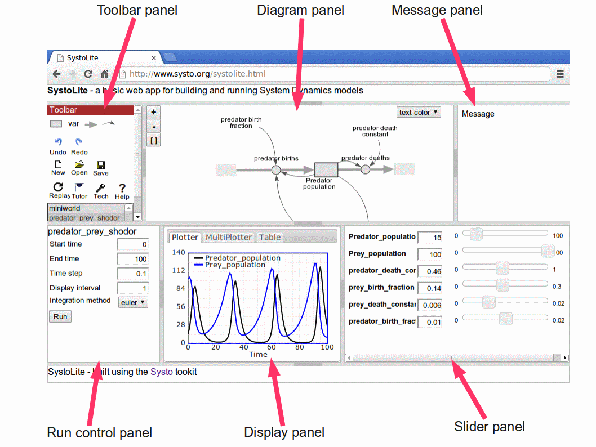

SystoLite is a basic, web-based tool for building and running System Dynamics (stock-and-flow) models. You can make your own models from scratch, or load other people's models.
If you are not familiar with System Dynamics modelling, please click here. If you are, and have used an existing System Dynamics tool such as Stella, Vensim, Simile, or InsightMaker, you should be able to get by using your existing knowledge.
SystoLite is built using the Systo toolkit. This consists of a set of "widgets", where each widget does one job relevant to working with system models - for example, one widget enables you to view and edit a model diagram, another shows a graph of simulation results, while another lists out the model equations. There are potentiallty many such widgets, and anyone with some programming ability can make their own. Web developers can pick-and-mix the widgets to make their own web pages, using just basic HTML and a little Javascript. SystoLite is merely just one of potentially many web pages made using Systo widgets. It has been developed both to illustrate the Systo approach, and to provide an easy-to-use environment for people new to System Dynamics modelling.
Simply go to http://www.systo.org/systolite. Probably best to use the Chrome or Chromium browser. Basic diagram interaction seems sluggish in Firefox, and I have not tested other browsers.
SystoLite is free, and doesn't even require any registration. You can just start making your own models, save them on your own computer, and share them with others.
Note that anyone is free to make a copy of SystoLite and use it on their own computer, or indeed put it on the web where anyone can access it. Equally, anyone can make any changes they want. So, the version at http://www.systo.org/systolite is potentially just one of many.
SystoLite consists of 6 panels. Together they fill the browser window (apart from a thin header and footer). You can move the boundary between the panels (by dragging the boundary), and collapse ones you don't need (by clicking on the boundary handle).
The upper three panels are mainly concerned with the model itself, while the bottom three are mainly concerned with running the moel (i.e. simulating its behaviour).
You can access an existing model in various ways:
1. Models provided with SystoLite. A number of basic System Dynamics models are provided, and are listed in the top-left panel. Simply mouse-over a model to read more about it, and click on it to load it. Notice that the model is automatically run.
2. From the web. You can access somebody else's model simply by entering a URL for it, provided they have published it on the web. Click on the File Open icon in the top-left panel, and enter the URL.
3. From a file. If someone has sent you a model as a text file, then click on the File Open icon, and select the file using the file directory option.
4. From Local Storage. You can save your own models in what is called "Local Storage" - disk space on your computer available to your browser. Once you have done this (as described below), you can open them again, by clicking on the File Open icon, select Local Storage, then select the required file.
You can zoom in and out; drag the diagram around; and move the symbols around.
To zoom in and out: Simply click on the + and - buttons.
To drag the diagram around: Move the pointer to a blank part of the diagram, push and hold the mouse button down, move the mouse, then release the mouse button.
To move model diagram symbols: Move the pointer to a stock symbol or a variable label, push and hold the mouse button down, move the mouse, then release the mouse button.
If you have already used System Dynamics software, the following notes should be enough to get you started.
If not, please look at the introductory tutorial, which take you through the process of building a simple System Dynamics model.
To add a stock or variable: Click on the stock or variable icon in the toolbar in the top-left panel, then click in the diagram area.
To make a flow arrow: Click on the flow icon in the toolbar, then drag the flow as follows: - for a flow between two stocks: mousedown in the first stock, drag to the second, then release the mouse button. - for a flow from outside the system (the "source/sink", or "cloud"), mousedown in a blank area of the diagram panel, drag to the stock, then release the mouse button. - for a flow from a stock to outside the system: mousedown in the stock, drag to a blank area of teh screen, then release the mouse button. Note that Systo automatically adds a "valve" symbol on the flow, and, if required, a "cloud" symbol at the start or end of the flow.
To add an influence arrow: Click on the influence symbol in the toolbar, then mousedown on the starting node, drag to the destination node, then release the mouse button.
To move a node around: mousedown on the node, then drag it to the desired position.
To re-route an influence arrow: mousedown on the arrow, the drag to achieve the required curvature.
Note that you cannot currently re-route a flow arrow, or move the valve symbol on it.
To re-label a component: click on the label, edit in the normal way, then click somewhere else.
To enter a value or an equation for a stock, variable or valve: double-click on the component, enter the value or equation, then click the OK button.
To run a model when you have finished entering all the values and equations: click on the Run button in the bottom-left Run Control panel. Note that sliders appear in the bottom-right panel, one for each stock and one for each parameter (i.e. a variable which is not influenced by any other). So now you can simply move the sliders, and the model will be automatically re-run continuously.